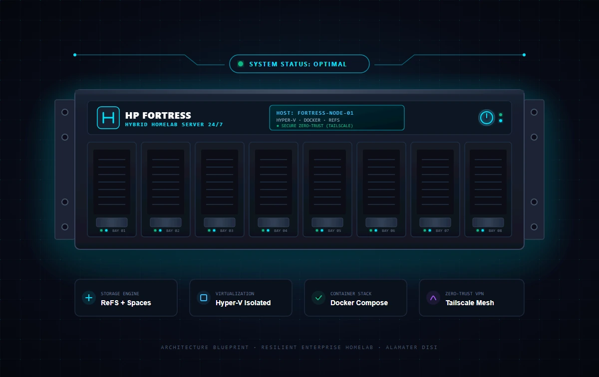
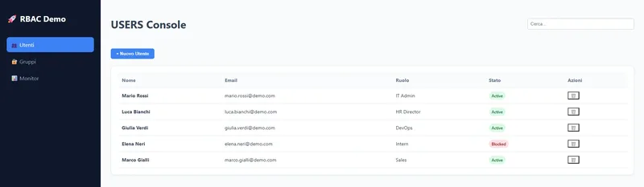
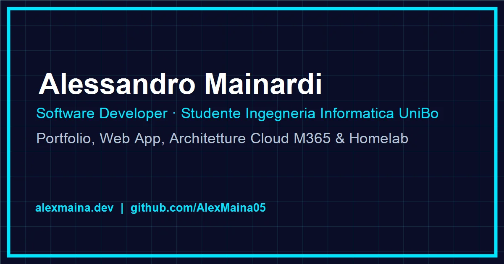

01 / HomelabHP Fortress Hybrid Server
24/7 enterprise server on Debian 13 with Proxmox, Docker, ZFS pool, WireGuard mesh, and Zero-Trust tunnels.
Portfolio / 2026 · Bologna, Italy
Engineering Showcase
Production-grade hybrid infrastructures, enterprise cloud identity governance, and modern web applications.

01 / Homelab24/7 enterprise server on Debian 13 with Proxmox, Docker, ZFS pool, WireGuard mesh, and Zero-Trust tunnels.

02 / Cloud IAMIdentity governance & auditing platform for Microsoft 365 & Entra ID enforcing Least-Privilege access.

03 / OperationsReal-time automotive operations platform with job tracking, inventory management, and telemetry logs.
More open-source repositories (PII Redactor Lite, 3D Parametric CAD, tooling):
GitHub Repositories ↗Italian Knowledge Base
Comprehensive, battle-tested sysadmin and cloud architecture tutorials published on the primary Italian knowledge base (alexmaina.dev/guide/).
Structured syllabus for MS-900, MD-102 Endpoint Administrator, Entra ID IAM, and Intune enterprise compliance policies.
Isolated enterprise development environment joined to sandbox Entra ID with zero contamination of the physical workstation.
Docker container architecture with MariaDB isolation, persistent volumes, and secure reverse proxy routing.
Python engineering, homelab architectures, cryptography fundamentals, and production deployment tutorials.
Academic Background & Credentials
I am a Software Developer and Computer Engineering student at Alma Mater Studiorum - University of Bologna (UniBo DISI). My focus spans cloud identity systems (Microsoft 365, Azure, Entra ID), hybrid homelab infrastructure, and modern software architectures.
Have a project or want to collaborate?